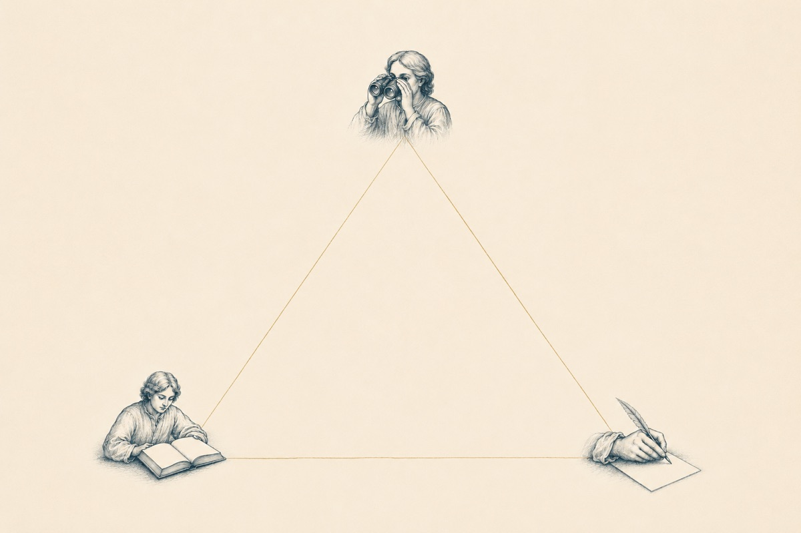

Как выстроить логику программы: концепт-история, модель TOTE, три позиции описания и лестница навыков — от простых к комплексным.
Мы уже неплохо продвинулись в вопросе о том, как проектировать программу обучения: выяснили, что концепт программы — это история движения нашего студента из точки А в точку Б; история с ним в главной роли, которую мы ему же и рассказываем. Ещё мы познакомились с универсальной моделью TOTE, которая описывает структуру любого поведения, и которую крайне полезно использовать в качестве «строительного материала» при проектировании учебной программы.
Каким будет наш следующий шаг?
И вот тебе вопрос на миллион: как сделать так, чтобы этот концепт программы был действительно про студента, а не про «второго себя»? Давай признаем честно: авторы курсов сплошь и рядом строят программу для человека, подозрительно похожего на них самих (с их бэкграундом, с их любовью к теме, их же выносливостью). К чему приводят такие допущения — нужно говорить? Правильно, к тотальной потере контакта с реальным учеником (его миром, жизненными обстоятельствами, языком, целями и задачами), что в свою очередь приводит к тому, что ученик делает ручкой и уходит с курса.
И так понятно: «Если тебе, уважаемый автор, так хорошо общаться с самим собой, то зачем тебе я?»
Итак, вот задача, которую мы будем решать в этой главе: как тебе, будучи автором продукта, держать в голове фигуру студента в процессе создания программы курса и писать её именно для него, а не для себя?
Для ответа на этот вопрос я хочу предложить тебе инструмент, который существенным образом расширяет картину восприятия действительности. Называется он — трёхпозиционная модель описания, и смысл его заключается в том, чтобы научиться смотреть на образовательный продукт с трёх разных позиций, последовательно переключаясь между ними.1
Подозреваю, что это позиция тебе хорошо знакома: я, мой продукт, мои ценности, мои убеждения; всё, что я хочу передать; всё, что мне так дорого в моей профессиональной области; всё, что люблю и считаю важным. И конечно же: всё, что у меня болит относительно темы; всё, что меня мотивирует и подбрасывает по утрам из кровати, заставляя говорить об этом в блоге или с клиентами. В общем, из этой позиции мы можем годами не выходить — она тёплая, уютная, обустроенная и очень понятная. И вообще — откуда бы взялся проект/продукт/курс, если бы не горящее внутри тебя стремление Автора высказаться! Да?
Вот тут уже нам предстоит совершить волевое усилие, чтобы переключить «роль», перенастроить восприятие и посмотреть глазами студента на свой продукт. Прожить «из его шкуры», или, говоря известной индейской метафорой, — «пройти милю в его мокасинах». Иными словами — тебе нужно поставить себя на место студента, напрячь всё своё воображение, чтоб погрузить себя в его жизненные обстоятельства и ответить на вопрос: каково это — учиться на твоей программе, будучи им. Как студент будет проживать те или иные стыковки программы, как будет ощущать себя на вебинаре или при просмотре уроков, как справляться с домашними заданиями, имея определённый рабочий график, мужей/детей/собак, командировки, усталость и т. д. Если проделать эту операцию переключения достаточно честно, тебе могут открыться бесценные догадки — на каком этапе у студента случится информационный перегруз, где обрушится мотивация, а где, напротив — произойдёт важный инсайт, требующий времени для переваривания.
И, наконец, третья, очень важная роль, необходимая для того, чтобы проанализировать те откровения, которые принесёт тебе 2 позиция. 3 позиция — это взгляд нейтрального эксперта, методолога-наблюдателя, который не имеет никакой личной привязанности ни к одной из твоих любимых тем. Ему в хорошем смысле наплевать — останется во втором модуле такая дорогая твоему авторскому сердцу лекция или нет. Он смотрит на структуру целиком и его задача — находить конструктивные решения, которые помогут усилить программу с учётом особенностей портрета студента.
1 …и как многие инструменты работы с мышлением — работают далеко не только в контексте обучения, а ещё много где. В контексте коммуникации, например. В общем — пользуйся на здоровье.

Так. По отдельности, вроде бы, роли понятны. Но как работает модель целиком? Чтобы с этим разобраться, я предложу тебе рассмотреть практику трёхпозиционного описания на примере конкретного проекта.
Итак, познакомлю тебя с Кристиной, фитнес-тренером. У неё проект женского клуба с ежемесячной подпиской. На текущий момент идея выглядит следующим образом: три групповых тренировки в неделю, длительностью по 1 часу, в Zoom. Кроме тренировок — два записанных подкаста в закрытом телеграм-канале с рекомендациями. Неделя 1 — мягкие коррекционные техники для плавного входа в режим, неделя 2 — повышение активности, недели 3–4 — интенсивный функциональный тренинг, работа с собственным весом.
Глядя на проект из своей первой позиции (Автора), Кристина довольна тем, как клуб спланирован и продуман, она готова его запускать.
Теперь мы попросим Кристину подробно описать портрет потенциальной участницы её клуба. Благо, у Кристины приличный бэкграунд индивидуальной работы, она изначально довольно ясно понимала, для кого создаёт клуб, поэтому это несложный для неё вопрос.
Итак, женщина 35+, с гибким графиком работы, у которой уже было несколько попыток внедрить спорт в свою жизнь на постоянной основе, но все они заканчивались срывами. К текущему моменту потенциальная участница уже очень устала «терять мотивацию и начинать сначала», у неё снова был большой перерыв в занятиях из-за стресса на работе.
Складывается портрет? Вполне. И вот мы попросим Кристину погрузиться в роль этой женщины: попросим телесно, эмоционально на некоторое время стать ею2.
И следующим шагом зададим Кристине вопрос: что она чувствует, когда из позиции своей ученицы смотрит на проект клуба? Каково ей? Что ей нравится? Что даётся легко? А где, возможно, возникают трудности?
И вот начинается интересное: в какой-то момент Кристина говорит:
«Сейчас я чётко чувствую, что мне, как участнице, очень важен деликатный, бережный подход, особенно на самом старте. Мне очень легко махнуть рукой на тренировки и на себя, мне очень легко решить: „ну вот, опять не получилось“. И поэтому мне нужно „личное касание“ от тренера, которое поможет войти в режим, плавно и без насилия… И ещё, конечно, важно, чтобы участие в клубе не отнимало много времени; я совершенно точно не готова ни к каким домашним заданиям. Ещё очень хочется разнообразия, потому что если будут одни и те же приседания — скорее всего я в какой-то момент не смогу уговорить себя прийти на очередную тренировку. И, да, мне важно, чтобы тренер давал комментарии и объяснения, почему мы делаем то или иное упражнение: так я чувствую, что у меня больше готовности включаться и выполнять».
Вау! Круто же? Лицо Кристины сильно меняется при переходе от 2 позиции (участницы) к третьей позиции (нейтрального эксперта-методолога). Надеюсь, ты тоже замечаешь, как много деталей добавляет взгляд со второй позиции к первичному описанию проекта, которое было у Кристины.
И вот ровно здесь нам очень важно переключиться в роль Эксперта-методолога (3 позиция) и попросить его дать рекомендации Автору (1 позиция) — что можно добавить, усилить, изменить на основе обратной связи Участницы (2 позиция).
Важный комментарий: понятно ли, почему здесь нужна именно третья позиция? Почему с обратной связью от Участницы мы идём к нейтральному Эксперту, а не к Автору? Потому что у Автора есть личная привязанность к программе, эмоциональная связь с проектом, как со своим детищем.
И, значит, эта эмоциональная вовлечённость может сильно помешать Автору услышать и конструктивно принять пожелания и потребности Участницы: он может начать защищать свои задумки, обесценивать запросы потенциальной ученицы и, что особенно важно — эмоциональная, личная подключка к собственному проекту может сильно сужать обзор и мешать увидеть вполне эффективные, интересные, действенные решения, которые позволяют учесть пожелания потенциальных участников, не теряя при этом духа и первоначального замысла проекта3!
Итак, наша Кристина переходит из 2 позиции (Участница) в 3 позицию (Эксперт-методолог). Перед тем, как посмотреть на проект и проанализировать полученную от 2 позиции обратную связь, она проверяет, что действительно смотрит на проект клуба со стороны, глазами нейтрального специалиста, у которого нет ни малейшей личной заинтересованности в том, как именно клуб будет организован — только трезвый профессиональный аналитический взгляд.
Из 3 позиции Кристине пришли в голову следующие рекомендации:
Очень простой, чтобы не отнимал времени для заполнения. Например, два вопроса в конце тренировки: «откалибруй своё состояние по уровню энергии на входе и на выходе по шкале 1–10» (покажет динамику уровня энергии на протяжении месяца) и «что у тебя сегодня получилось?» (чтобы сформировать фокус на успехе, а не на неудаче).
Здесь мы учитываем страх участницы «бросить тренировки в десятый раз». Первые две недели должны быть очень мягкими и постепенными. Их цель — не ставить рекорды, а помочь человеку сделать спорт приятной, желанной рутиной и увидеть: «у меня получается приходить и стабильно уделять внимание своему телу». Функциональный тренинг придержим до того момента, когда участницы втянутся и почувствуют, что у них достаточно сил, чтобы осваивать более сложную программу.
И, пройдя по 3 позициям, самый важный, финальный шаг — снова надеть на себя шапку Автора. И вот, что говорит Кристина, вернувшись в 1 позицию:
«Я увидела, что моё внутреннее желание дать „всё, сразу и побольше-побольше“ могло сыграть во вред проекту и участницам. Теперь я вижу: двигаться нужно медленнее, и вообще учитывать темп, опираясь на реальные возможности и состояние тех, кто занимается. Трекер действительно улучшит контакт и облегчит сбор обратной связи. А контент подкастов можно адаптировать под живые запросы группы — например, если через две недели участницы спросят про принципы питания — мне будет, что ответить. И тогда проект станет действительно „про людей“».
Итого! Навык переключаться между тремя позициями восприятия даёт объёмный взгляд на свой проект, позволяет сместить фокус с себя-Автора на студента и его опыт, и учесть очень многие подводные камни продукта ещё до его старта. Магия, скажешь ты? Ничего подобного — чистая технология!
2 На курсе «Методология Fundamentum» есть отдельный видео-урок, посвящённый практике трёхпозиционного описания. Там мы с моей ассистенткой в режиме реального времени показываем, как переходить из позиции в позицию, на что при этом важно обращать внимание и т. д. Поэтому, если хочешь увидеть эту технику во всех деталях — добро пожаловать на курс.
3 Клянусь, я десятки раз встречал авторов курсов, преподавателей, которые с пеной у рта начинали винить студентов в лени, тупости, нежелании глубоко погружаться в их бесценный предмет. Одна беда — эти люди совершенно не учитывали, что у студентов помимо их «святой дисциплины» есть ещё своя жизнь, работа, дети, собаки, переезды, хобби и т. д. Одна из задач этой книги — помочь авторам выглянуть за пределы своих башен из слоновой кости и двинуться навстречу тем, для кого они, собственно, и создают свои продукты.